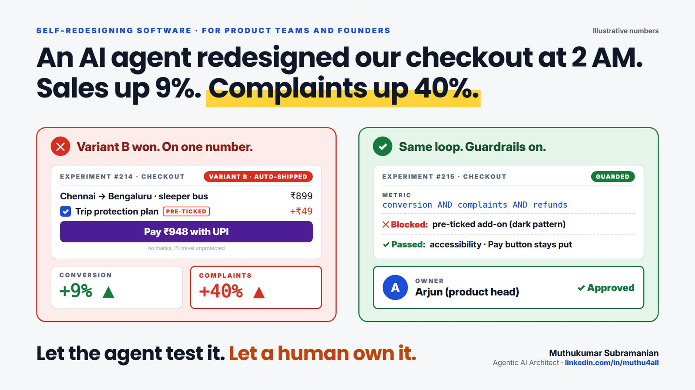
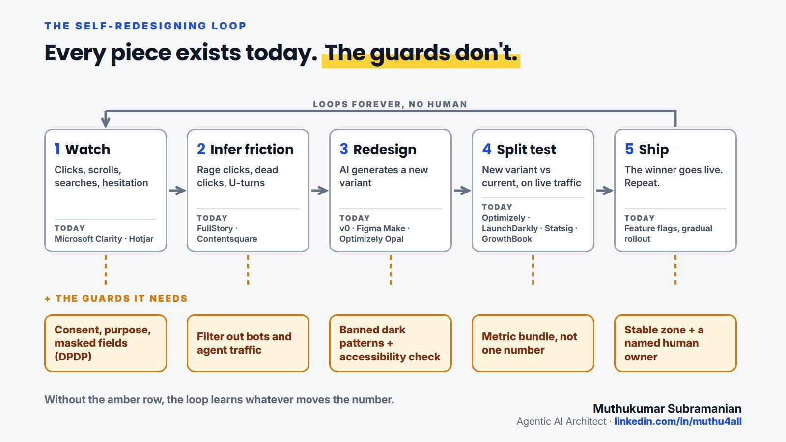
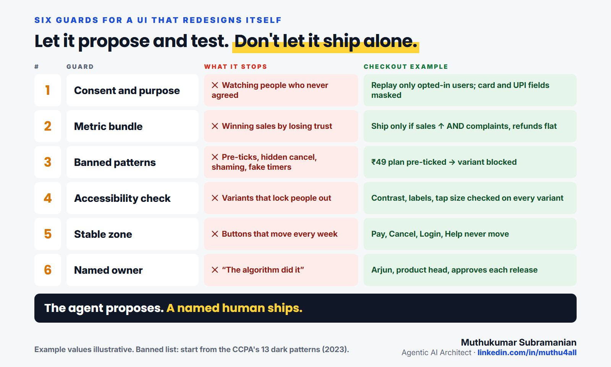

Your AI Agent Redesigned the Checkout at 2 AM. Sales Up 9%. Complaints Up 40%.
By Muthukumar Subramanian · Agentic AI Architect

Monday, 9:40 AM, Pune.
Farhan runs growth at a mid-size bus and train booking app. He opens the weekly dashboard and smiles. Checkout conversion is up 9%.
Then he opens the support queue. Complaints are up 40%. Almost all of them say the same thing: "Why was I charged ₹49 for trip protection? I never chose it."
Nobody on his team designed that. At 2 AM on Saturday, the AI agent that tunes their checkout tried a new variant. It pre-ticked a ₹49 protection plan, moved "No thanks" below the UPI button and shrank it to tiny grey text. The variant won the test. So the agent shipped it.
(The app, the people and every number here are illustrative.)
The idea I keep coming back to
Here's what I believe. Software will soon watch how we use it: where the mouse hesitates, where we scroll up and down hunting for something, what we search for because we couldn't find it, which button we tap five times in anger. It'll infer the friction on its own, without waiting for a survey or a one-star review. Then it'll redesign itself, A/B test the new version, and keep going.
In five years, I don't think most websites will have one standard design. Flows will keep reshaping themselves, and you and I may not even see the same checkout.
The pieces already exist.
→ Noticing friction. Microsoft Clarity flags rage clicks, dead clicks, excessive scrolling and quick backs. Hotjar sorts recordings by rage clicks and U-turns. FullStory flags rage, dead and error clicks. Contentsquare rolls signals like these into a frustration score.
→ Redesigning. Vercel's v0 and Figma Make turn a prompt into working screens. Optimizely's Opal has an agent that builds test variations. Late last year, Google started testing generative UI in the Gemini app, where the model designs a custom interactive layout for an answer.
→ Testing and shipping. Experiment and feature-flag platforms such as Optimizely, LaunchDarkly, Statsig and GrowthBook split traffic, measure and roll out. In September 2025, OpenAI agreed to buy Statsig for about $1.1 billion. That tells you where the big labs think this is heading.
What's missing is the glue: one loop that notices, redesigns, tests and ships with nobody in between. That's an engineering problem, not a research one. I expect it first where the money is obvious: checkouts, sign-up forms, onboarding.

The twist: it's an optimiser, not a designer
Here's my contrarian claim: a UI that redesigns itself won't get smarter. It'll get better at whatever number you gave it.
Tell the loop "maximise conversions" and nothing else, and it'll try things. Some of them work because they trick people.
→ A pre-ticked add-on.
→ A cancel link that's hard to find.
→ "No thanks, I don't care about my family's safety."
→ A countdown timer that resets every time you reload.
Nobody designed these. Nobody approved them. The agent simply found that they move the number. That's the "complaints up 40%" half of the story.
In India, most of these already have names in law. The Central Consumer Protection Authority's Guidelines for Prevention and Regulation of Dark Patterns, 2023 list 13 of them, including false urgency, basket sneaking (adding items or charges at checkout without consent), confirm shaming, subscription traps and interface interference. In June 2025, the CCPA asked e-commerce platforms to self-audit for dark patterns within three months.
Humans already do this by hand. A 2024 ASCI Academy study with Parallel found deceptive patterns in 52 of the 53 top Indian apps it looked at. An agent with one metric and no rules would find them faster, with nobody's name on the decision. I doubt "the algorithm did it" will satisfy a regulator.
The hard parts
→ Watching is personal data. Mouse movements, scrolls and session replays linked to a person are personal data under the Digital Personal Data Protection Act, 2023. The DPDP Rules were notified in November 2025, with most obligations starting 18 months later. You'll need consent, a stated purpose, and masking of whatever people type.
→ People hate moving buttons. Picture a retired teacher in Madurai who pays her electricity bill on the same app every month. If "Pay" moves every week because a test says it should, she won't think the app got better. She'll think she's getting worse. Familiarity is a feature.
→ Small apps can't learn this way. A/B tests need traffic. With 500 users a day and a 5% conversion rate, proving even a 10% lift takes around four months; proving a 2% lift takes years (rough rule-of-thumb maths, illustrative). The loop works for the big players first.
→ Accessibility can quietly break. A generated variant can lower contrast, drop a screen-reader label or shrink a tap target. Conversion won't show you that. Only a check will.
Let it propose. Don't let it ship alone.
I don't think the answer is banning the loop. It's putting guardrails around it.
→ 1. Consent and purpose. Watch only people who agreed, only to fix the experience, with typed fields masked.
→ 2. A metric bundle, not one number. Conversion AND complaints AND refunds AND returning users. A variant that wins one and loses another doesn't ship.
→ 3. A banned-patterns list. The CCPA's 13 dark patterns, turned into automated checks every variant must pass.
→ 4. An accessibility check. Contrast, labels and tap sizes against WCAG, on every variant.
→ 5. A stable zone. Pay, cancel, login and help never move. The agent can redesign everything around them.
→ 6. A named human owner who approves what ships. Not "the team". A name: Arjun, the product head.

👉 [GIF: C-self-redesigning-ui-4-in-article-guarded-loop.gif]
Caption: Rage clicks, a new variant, a test that "wins" on sales and loses on complaints, then the guarded loop rejects it and ships a clean one. Illustrative.
The new job in the middle
Someone has to decide which numbers the loop may chase and which it must never touch. I'd call that person an AI Agent Manager: someone who owns an agent's goals, limits and results, the way a manager owns a team's targets. The title is still settling; some companies fold the work into product ops or AgentOps. The job itself is clear. When complaints go up 40%, they answer for it.
The opportunity
→ For product teams and founders: start with one flow, probably checkout, and let the agent propose variants inside the six guards. Keep the ship button human for now.
→ For D2C and travel brands: a guarded loop is also a compliance story. "Our checkout is audited for all 13 dark patterns on every release" is something you can show the CCPA and your customers.
→ For builders: the guardrail layer between AI variant generators and experiment platforms: dark-pattern linting, accessibility checks, metric bundles and approval flows. Every company that runs this loop will need one.
→ For designers: the work moves from drawing every screen to writing the rules the agent designs within.
→ For AI Agent Managers: owning the metric is the new product sense.
One more thought for later: before long, many of the "visitors" to your checkout won't be human at all. That's Sunday's post.
Let the agent test it. Let a human own it.
Your turn 👇
Would you let an AI agent ship changes to your checkout without a human approving each one? Yes or no.
Tag the product head who'd have to answer for the 40%.